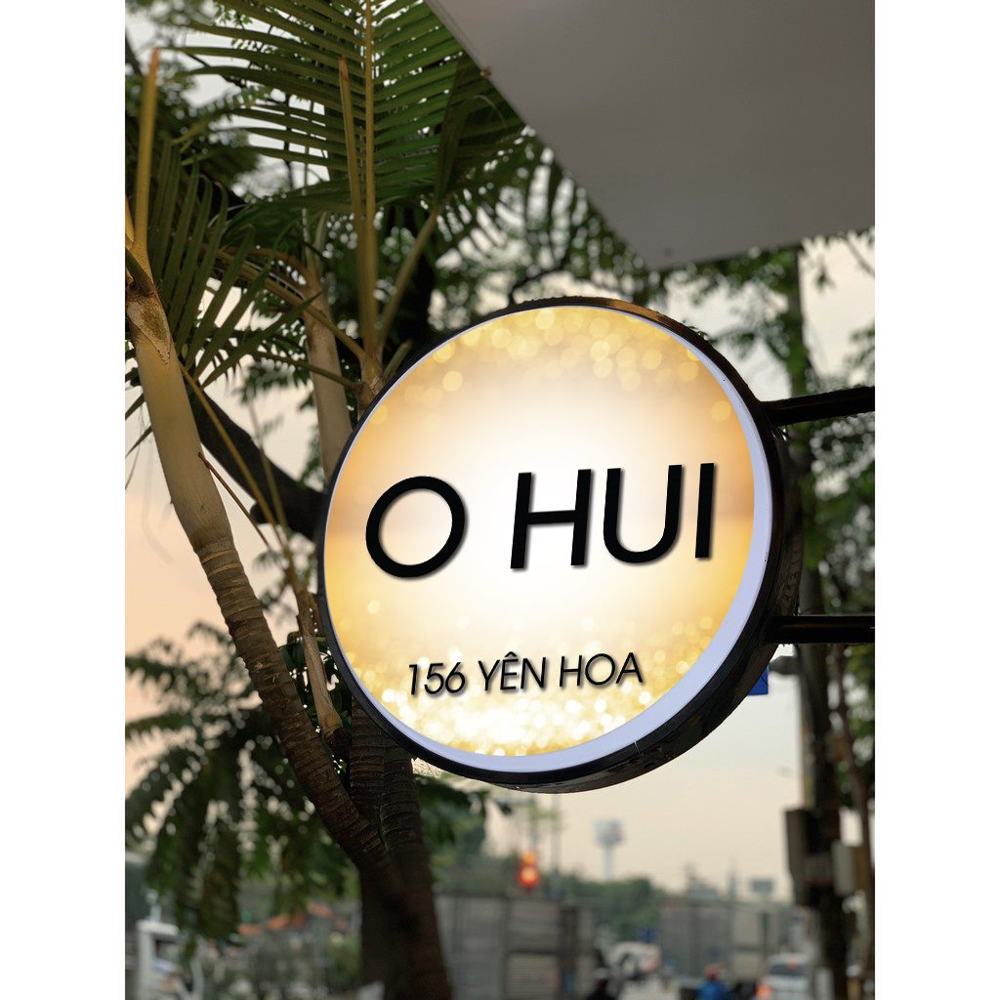

Nhu cầu làm biển quanh Hồ Tây, Tây Hồ
Khu vực Hồ Tây, Tây Hồ, Hà Nội có nhiều cửa hàng mặt phố, văn phòng, quán ăn uống, cafe, nhà thuốc, phòng khám và dịch vụ bán lẻ. Khi làm biển, cần ưu tiên khả năng nhìn từ xa, độ sáng buổi tối và bố cục đủ rõ để khách đi ngang nhận ra nhanh.
- Biển cafe, nhà hàng cần phong cách riêng, ánh sáng vừa và dễ nhận diện buổi tối.
- Biển spa, boutique, dịch vụ cao cấp cần vật liệu sạch, chữ gọn và hoàn thiện kỹ.
- Biển khách sạn nhỏ, homestay, villa cần nhận diện trang nhã, không rối mặt tiền.
- Các tuyến phố quanh Hồ Tây nên cân bằng giữa nổi bật và thẩm mỹ tổng thể.
Khu vực phục vụ
Nhận tư vấn và báo giá theo ảnh mặt tiền quanh các tuyến/khu vực sau:
- Hồ Tây
- Xuân Diệu
- Tô Ngọc Vân
- Đặng Thai Mai
- Âu Cơ
- Nghi Tàm
- Yên Phụ
- Lạc Long Quân
- Thụy Khuê
- Trích Sài
Mẫu biển tham khảo theo ngành
Các ảnh dưới đây dùng để tham khảo kiểu mặt tiền, ánh sáng và bố cục. Khi báo giá thực tế cần chốt kích thước, vật liệu, vị trí lắp và điều kiện thi công.



Liên kết dịch vụ liên quan
Câu hỏi thường gặp
Có nhận làm biển quảng cáo quanh Hồ Tây không?
Có. Nhận làm biển quanh Xuân Diệu, Tô Ngọc Vân, Đặng Thai Mai, Âu Cơ, Nghi Tàm, Yên Phụ, Lạc Long Quân và khu Tây Hồ.
Cafe/nhà hàng khu Hồ Tây nên làm biển gì?
Có thể dùng chữ nổi hắt sáng, hộp đèn LED, biển vẫy, neon decor hoặc bảng menu tùy phong cách quán.
Spa/boutique nên chọn màu và ánh sáng thế nào?
Nên chọn màu sạch, ánh sáng vừa đủ, chữ dễ đọc và tránh quá nhiều thông tin trên mặt tiền.
Có sửa biển cũ hoặc đổi nhận diện không?
Có. Có thể thay chữ, đổi mặt biển, thay LED, sửa hộp đèn hoặc làm lại bố cục theo nhận diện mới.